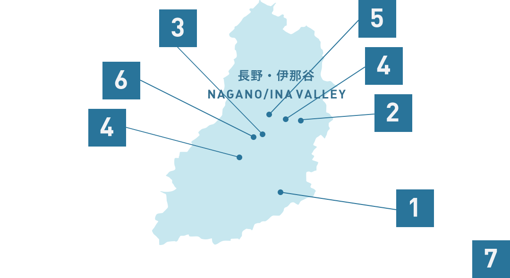
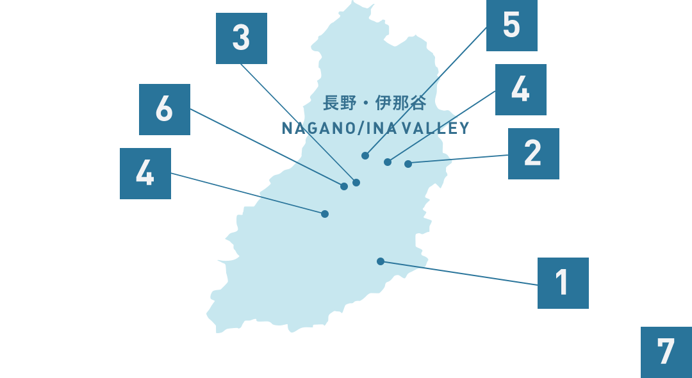
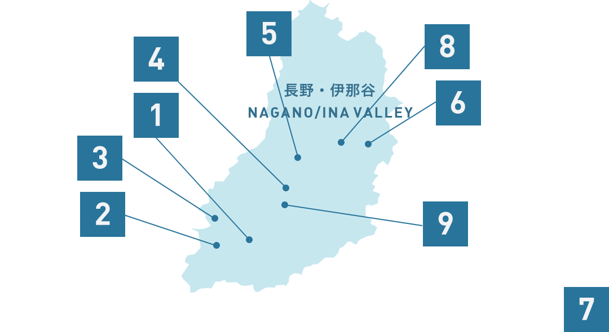
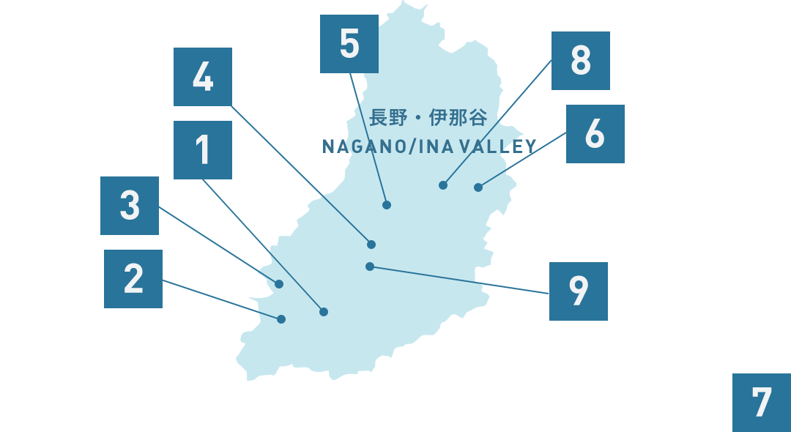

Shimoguri
Farmland and farmers scatter across Shimoguri in 800m to 1100m altitude. The breathtaking scenery warranted it the nickname “the Austria of Japan”.
Ina Valley, NaganoShimoguri
Shimoguri Kamimura, Iida, Nagano 399-1403
0260-34-1071
Farmland and farmers scatter across Shimoguri in 800m to 1100m altitude. The breathtaking scenery warranted it the nickname “the Austria of Japan”.
Recommended Seasons
Spring
Summer
Autumn
Winter
Suggested Duration of your Trip
2days
4days


 
